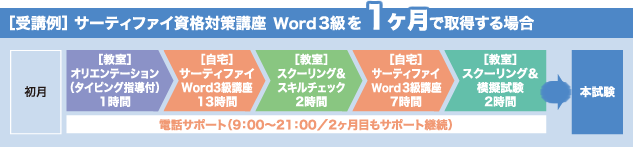
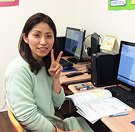

分かりやすい映像教材をインターネットでご提供！
テキスト教材だけでなく
プロの講師が詳しく解説！
ポイントを押さえた学習をしっかりとサポート！
好きな時間に何度でも繰り返し学べる環境をご提供いたします！
年中無休のサポートデスクで受講内容で
分からないことが質問できる！
テキスト通りに操作ができなかったり、
問題集の解き方がわからない場合など、
一人で悩まず、その場で疑問を解決しましょう！
自宅での通信講座で学んだ事や不安に感じるポイントも、
ベテラン先生が教室で的確に指導してくれます。
自宅学習が確実に身についていることが実感でき、
受験に対する心構えやアドバイスを受けられるので、
安心して受験に挑めます！
必ず身につく分かりやすい学習教材と個別サポートによる的確な指導、
万全のサポート体制が短期間でのスキルアップを実現します！
マイクロソフトオフィス2013のワード・エクセル・パワーポイントに対応した、資格取得希望者や、実用スキルのレベルアップを求める方、就職・転職希望者へ向けた新しい講座です！
全国150教室以上を展開する「パソコン市民講座」の映像教材が、オンラインでの「自宅学習」で学べる！
さらに、「スクーリング」制度を設けることで、教室での直接指導を受ける事ができ、インストラクターによるカウンセリングや、試験対策のアドバイスで、合格へのより確かな導きが出来る指導を実践！
パソコン市民講座では「サーティファイ」および「マイクロソフト オフィス スペシャリスト（MOS）」を取得することができます。
ビジネスで役立つ知識と技術の習得を目的とした資格検定試験
ワード・エクセルの基礎知識や操作など、利用スキルを証明する資格
マイクロソフトオフィスのアプリケーションを使って、ビジネス実務で作成する文書や図表などを効率的に作成する技能を修得する。
マイクロソフトオフィスのアプリケーションの様々な機能を効率よく使いこなす技能を修得する。
Word2013クイックマスター基本編のテキストに沿った操作練習と、問題集を使用した練習問題や総合演習を行い、認定試験3級の合格を目指します。
| ● 受講期間目安 | 2か月 |
|---|---|
| ● 講座回数 | 20回 |
| ● スクーリング | 2回（4時間） |
| ● 学習内容 | 書式設定・タブとリーダー・インデント・表・図形・ワードアートなど |
Word2013クイックマスター応用編のテキストに沿った操作練習と、問題集を使用した練習問題や総合演習を行い、認定試験２級の合格を目指します。
| ● 受講期間目安 | 2か月 |
|---|---|
| ● 講座回数 | 20回 |
| ● スクーリング | 2回（4時間） |
| ● 学習内容 | 書式設定・段組み・文書の構成・SmartArt・差し込み印刷など |
Excel2013クイックマスター基本編のテキストに沿った操作練習と、問題集を使用した練習問題や総合演習を行い、認定試験３級の合格を目指します。
| ● 受講期間目安 | 2か月 |
|---|---|
| ● 講座回数 | 20回 |
| ● スクーリング | 2回（4時間） |
| ● 学習内容 | データ入力・数式・表・グラフ・関数・データベースなど |
Excel2013クイックマスター基本編のテキストに沿った操作練習と、問題集を使用した練習問題や総合演習を行い、認定試験３級の合格を目指します。
| ● 受講期間目安 | 2か月 |
|---|---|
| ● 講座回数 | 20回 |
| ● スクーリング | 2回（4時間） |
| ● 学習内容 | 入力規則・条件付き書式・検索・置換・ピボットテーブル・マクロなど |
PowerPoint2013クイックマスターのテキストに沿った操作練習と、問題集を使用した練習問題や総合演習を行い、認定試験初級の合格を目指します。
| ● 受講期間目安 | 2か月 |
|---|---|
| ● 講座回数 | 20回 |
| ● スクーリング | 2回（4時間） |
| ● 学習内容 | プレゼンテーションの作成・文字の編集・オブジェクトの作成・表示効果・スライドショー・SmartArtの活用など |
FOM出版社刊「よくわかるマスターMOS Word2013対策テキスト＆問題集 改訂版」を使用し、その中にあるLessonをしっかりと理解することで合格に値する知識を習得していただきます。
| ● 受講期間目安 | 2か月 |
|---|---|
| ● 講座回数 | 20回 |
| ● スクーリング | 2回（4時間） |
| ● 学習内容 | 書式設定・段落・文字の効果・ページ区切り・表・画像・図形・テキストボックス・SmartArt・ヘッダーやフッター・リボンのカスタマイズ・印刷など |
FOM出版社刊「よくわかるマスターMOS Excel2013対策テキスト＆問題集 改訂版」を使用し、その中にあるLessonをしっかりと理解することで合格に値する知識を習得していただきます。
| ● 受講期間目安 | 2か月 |
|---|---|
| ● 講座回数 | 23回 |
| ● スクーリング | 2回（4時間） |
| ● 学習内容 | 書式の設定、セルの設定、表示形式の設定、スパークライン、レコード抽出、グラフ作成、画像・図形・テキストボックスの挿入、SmartArt、マクロの登録、関数など |
| サーティファイ | Word 3級 | 18,000円 |
|---|---|---|
| Word 2級 | 19,000円 | |
| Excel 3級 | 18,000円 | |
| Excel 2級 | 19,000円 | |
| PowerPoint 初級～上級対応 | 18,000円 | |
| MOS | Word Specialist | 16,000円 |
| Excel Specialist | 16,000円 |
金額はすべて税別表記
| サーティファイ | Word 3級 | 5,800円 |
|---|---|---|
| Word 2級 | 6,800円 | |
| Excel 3級 | 5,800円 | |
| Excel 2級 | 6,800円 | |
| PowerPoint 初級 | 5,800円 | |
| PowerPoint 上級 | 5,800円 | |
| MOS | Word Specialist | 10,584円 |
| Excel Specialist | 10,584円 |
金額はすべて税込表記
Q. 高度なOffice®PCスキルを持った人材が欲しいですか？
［企業の声］●Excel®のみならず高いスキルを持った人材は欲しい。●当然高いスキルを持っていたらいい。●中堅層のPCスキルアップが現在の課題。●通常業務でも高いスキルのある人間を求めている。
Q. 就職活動に有利だと思うスキルは何ですか？

再就職のために、WordとExcelのスキルアップとMOS資格取得を目指しました。今までは我流でもなんとか使いこなしていたWordとExcelでしたが、分からない事も多いので基礎からしっかり学ばせていただきました。分からない事はその場で先生に質問でき、毎回、楽しく落ちこぼれる事なく学ぶ事ができました。
MOS試験に向けてのアドバイスもしてくださり、自信を持って試験に臨む事ができました。そのお陰でWordもExcelも高得点で合格しました。
先生方には本当に感謝しています。これからも資格に恥じぬよう勉強していきたいと思っています。

きっかけは友人に以前このパソコン教室の事を聞いた覚えがあり、仕事でエクセルを使いたいと思い”そういえば・・・!!”と思いだし勇気を出して訪ねました。とても優しくて丁寧な対応の先生方ばかりで、緊張もなくなりました。色々な年齢層の方々が新しいことにチャレンジされているのを見て、より一層やる気が増しました。
以前からワードやエクセルを使いこなせるようになりたいと思っていて、ワードのMOSも合格できて嬉しい気持ちです。
次はエクセルも・・・・と思っています。いくつになっても学べる機会や場所があるのは、ありがたいことですね。